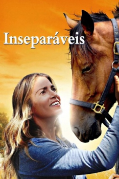

Inseparáveis (2016)


An inspiring true story about love, family and following your dream.

Avaliação (TMDb):


6.5/10 (52 votos)
Avaliação (Usuário):
Outro Título:A Sunday Horse
País:United States, 108 minutos
Idiomas falados:Inglês, Português
Gênero(s):Drama, Família
Diretor(s):Vic Armstrong
Codec:MPEG-2 (DVD)
Número: 2685
Sinopse:
Depois de um acidente quase fatal com um cavalo, os médicos concluiram que seria impossível ela competir novamente, mas a paixão e a determinação em seus sonhos, fazem ela desafiar todos os resultados e se conquistar o Campeonato Mundial de Saltos.
Elenco:
Nikki Reed, Linda Hamilton, William Shatner, Ving Rhames, Ryan Merriman, Cassi Thomson, Deena Dill, Gary Grubbs, Georgina Armstrong, John Redlinger
Tipo de mídia: DVD5,
Legendas: Português
Alugado: Não
Tela: 16:9 Widescreen